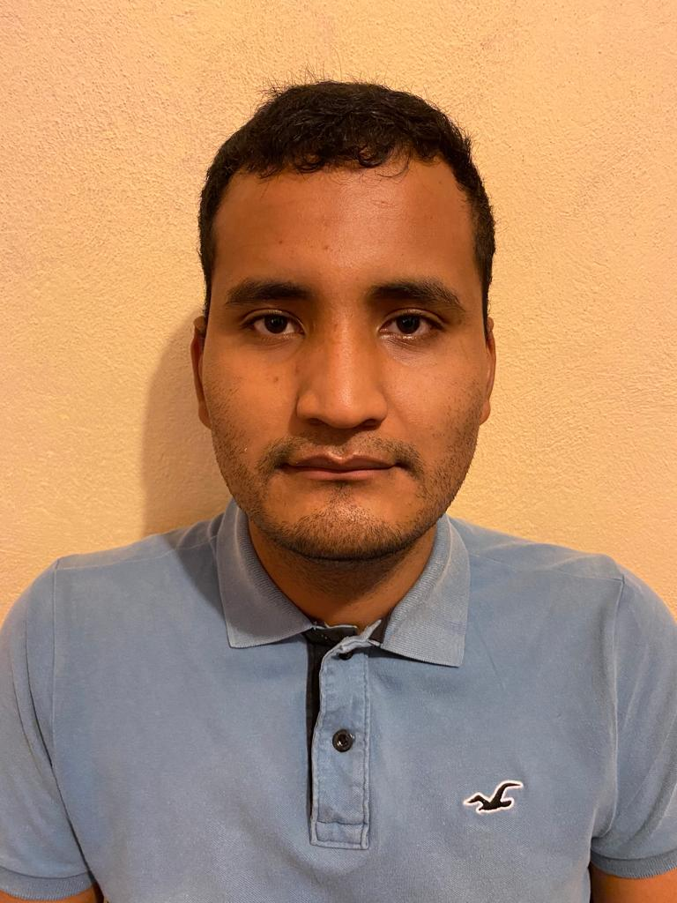

Mi curriculum

Javier Aguirre Nuñez
Estudiante de ingenieria electronica
Resumen profesional
Estudiante ingeniería electrónica, con
un gran interés en programación y control.
Con capacidad para aprender y aplicar mis
conocimientos al ámbito profesional. En
busca de una oportunidad laboral en la que
pueda desarrollar mis habilidades y
adquirir experiencia.
Conocimientos básicos en:
- LabVIEW (Bajo)
- Android Studio (Bajo)
- DIALux (Bajo)
- IDE Arduino (Bajo)
- Proteus (Bajo)
- Multisim (Bajo)
- Mathlab (Bajo)
- AutoCAD (Bajo)
- Logix Pro (Bajo)
- Allen Bradley (Bajo)
Conocimientos intermedios en:
- Paquetería Office (Word,Excel,PowerPoint) (Intermedio)
- Kondular (Intermedio)
Formacion
- Instituto Tecnológico Superior de Uruapan Carr. Uruapan-Carapan No. 5555, Col. La Basilia
- Taller introductivo de LoRaWAN (ABR-2021)
- Taller introductivo de Raspberry Pi (OCT-2019)
- Curso en el manejo del software Proteus Básico. (NOV-2018)
- Reconocimiento por participar en el 1er concurso de “Robots BEAM” (NOV2018)
- Reconocimienyo por participar en el 2do. “Concurso de Carritos de Radio Control”
- Curso en el manejo del software Proteus de nivel básico. (NOV-2017).